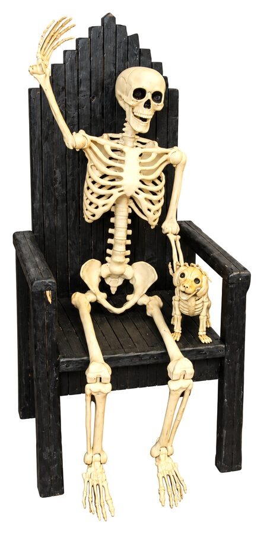

ATLAS | BTU Lab
ATLAS | BTU Lab
Blow. Things. Up.
The ATLAS BTU Lab is an inclusive community makerspace facilitating projects at the intersection of Art, Design, Engineering and Architecture. It serves multiple functions as a general workspace, and workshop host.

Who?
Anyone* can gain access to BTU. Our goal is to provide the most diverse, inclusive environment for makers of all types in a highly experimental and productive space.
How?
New members attend a 20 minute general orientation covering community expectations, safety and equipment.
When?
The orientation* schedule, and all scheduled events can be found on the BTU Lab Calendar.
What?
Questions: email BTU Lab at atlasbtulab@gmail.com.